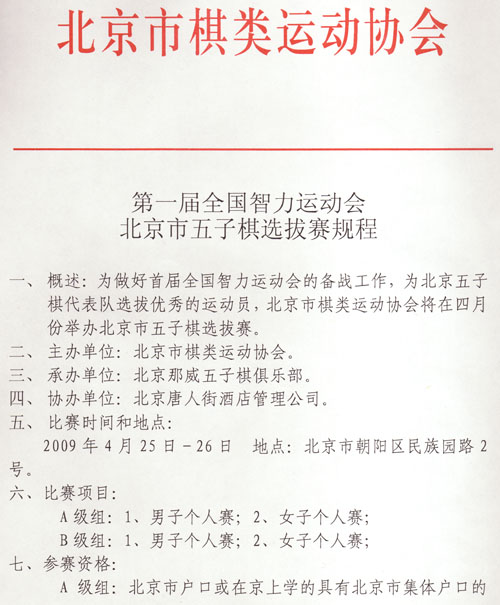
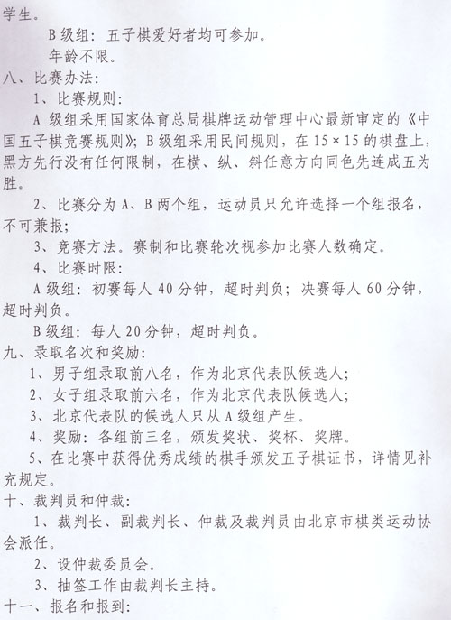
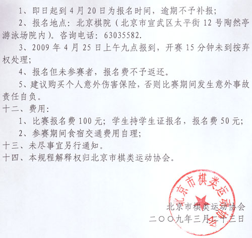

首届全国智运北京五子棋选拔赛
首页
五子棋新闻
#1 首届全国智运北京五子棋选拔赛 作者：有志青年 发表时间：2009-3-27 16:38:14



#2 Re:首届全国智运北京五子棋选拔赛 作者：白子无禁 发表时间：2009-3-29 12:31:24
这个B级组没有三手交换，执黑的不就都开必胜了，这样经过有交换的A组和无交换的B组对比，以此论证有禁比无禁高一筹是吗？
#3 Re:首届全国智运北京五子棋选拔赛 作者：耳痛 发表时间：2009-4-2 20:07:41
全国各地都开始选拔了呀 希望五子棋火起来
#4 Re:首届全国智运北京五子棋选拔赛 作者：屏蔽 发表时间：2009-4-5 21:19:27
忽然想去报B组……（傻笑中）